A timeline, not a notebook. Each entry below is something that changed the shape of the project: a decision, a first result, a deadline met, a thing that broke in a way we could not design around. The day-by-day record lives in the wet lab and dry lab notebooks, and everything here links to the page that argues it properly.
The year at a glance
One row per milestone. If a row is here it is because the project would have gone differently without it — not because it was a good day. Several of the best days are missing and two of the worst are not.
| Date | Milestone | Why it mattered | Documented in |
|---|---|---|---|
| 13 Dec 2025 | First team meeting | Forty-seven people, no project | Team |
| 27 Dec 2025 | First project proposal heard by the advisors | Killed, and rightly | Description |
| 1 Feb 2026 | First Human Practices meeting | The pitch met someone outside the room | Human Practices |
| 5 Feb 2026 | Four-track project roadmap drawn | The plan we spent the year departing from | Engineering |
| 7 Mar 2026 | Lab training starts | Nobody had held a micropipette in December | Safety |
| 27 Mar 2026 | Arabidopsis seed secured, NTU | An organism, at last | Plants |
| 4 Apr 2026 | Verslues lab visit, Academia Sinica | Vertical plates, and how stress is actually scored | Plants |
| 10–15 Apr 2026 | The pivot | Sensor, chambers, membrane, soil — ReLeaf as it now stands | Description |
| 12 Apr 2026 | First Arabidopsis on agar | The plant line starts | Plants |
| 25 Apr 2026 | Hollow-fibre membrane chosen | Fixed what the bioreactor had to be | Hardware |
| 16 May 2026 | Farmers' market interviews, Taipei | First time the idea was said to a farmer | Human Practices |
| 27–28 May 2026 | Light plate and photometer prototypes | Two instruments we could not buy | Hardware |
| 6 Jun 2026 | First B. subtilis growth test in the reactor | The loop held culture without leaking | Experiments |
| 17 Jun 2026 | Vertical plates racked the wrong way | Cost a fortnight; changed the protocol | Notebook |
| 18–20 Jun 2026 | Bioreactor design reviewed by two professors | Prototype 1 did not survive it | Human Practices |
| 24–29 Jun 2026 | First classroom trials | The lesson met students and lost an argument | Education |
| 2 Jul 2026 | The team learns git | This wiki exists because of one afternoon | Contribution |
| 7 Jul 2026 | Berkeley Historical GIS Project meeting | Turned a hunch about small farms into maps | Geospatial Analysis |
| 9 Jul 2026 | CH Biotech (正瀚) visit; commercial protectant secured | A benchmark we did not have to invent | Entrepreneurship |
| 12 Jul 2026 | First live pressure data off the reactor | The hardware became an instrument | Hardware |
| 17 Jul 2026 | Light plate apparatus fully assembled | Optogenetic induction becomes testable | Hardware |
| 19 Jul 2026 | Inline photometer reads live culture — four-fold high | A working instrument and a calibration problem | Measurement |
| 21 Jul 2026 | A day on Farmer Chen's smallholding | Changed who the device is for | Human Practices |
| 23 Jul 2026 | Hydroponic line abandoned | Soil, from here on | Plants |
| 3 Aug 2026 | Reactor, photometer and plants in one incubator | First time the system was one system | Results |
| 6 Aug 2026 | B. subtilis WB800 secured, NCHU | A protease-deficient chassis for secretion | Parts |
| 8–11 Aug 2026 | Promotion video shot and published | The argument, in two minutes | Gallery |
| 11 Aug 2026 | Commercial vertical farm visit | What controlled environment costs at scale | Sustainability |
| 14 Aug 2026 | High school programme runs | Third age band, third rewrite of the lesson | Education |
| 22 Aug 2026 | Lab safety audit photographed and filed | Evidence, not assertion | Safety |
| 23 Aug 2026 | Reactor rebuilt into a computer case | From bench rig to something portable | Hardware |
| 29 Aug 2026 | Booth and presentation rehearsals begin | Saying it out loud finds the holes | Gallery |
Before the season
GEMS Taiwan is a school team, not a university lab with a rolling cohort. Every year the roster empties and refills, and the people who carry anything across that gap are the advisors and the instructors — former members, a plant PhD, an electronics advisor, teachers who stay after the building closes. Before December 2025 there was no ReLeaf. There was a room, a bench, a set of pipettes, and a handful of people who had done this before and were willing to do it again.
What carried over was not a project. It was a habit: photograph everything, file it to the week it happened in, and write the reason down while you still remember it. Four hundred and eighty-nine photographs later, that habit is the only reason this page can be written at all. Every date below is the date on a file, not a date somebody reconstructed in October.
Winter: choosing the problem
December to February is the part of an iGEM year with nothing to show for it. No results, no parts, no hardware — just a large number of people trying to find one question they can all work on. It took us about ten weeks, and the answer we arrived at in February was not the answer we finished with.
-
13 December 2025
Day one, and somebody has already brought an Arduino
The first meeting was a room, a slide reading DEC 13, and forty-seven people who mostly did not know each other. No project had been chosen. On the same afternoon one member turned up with a microcontroller and a bag of jumper wire, which turned out to predict the shape of the year fairly well: the hardware line started before the biology did, and never stopped being ahead of it.
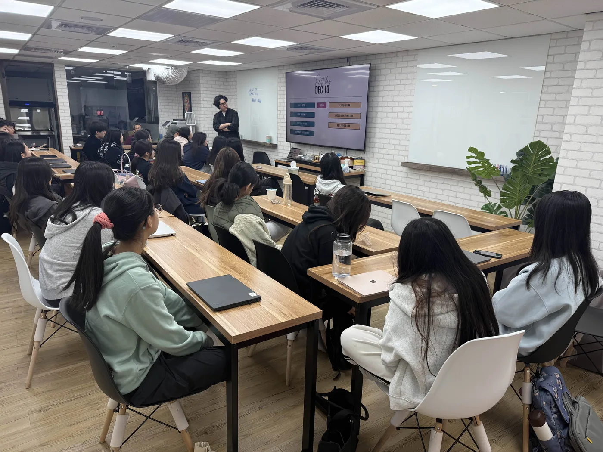
The first meeting. Everything on this wiki is downstream of this room. At this point the words Bacillus, optogenetic and bioreactor had not been said in it. -
27 December 2025
The first proposal is taken apart
Two weeks in, a member brought a full project proposal to four advisors. It did not survive the meeting, and that was the point of the meeting. What came out of it was the rule we used for the next three months: a proposal has to name the person who is worse off if nobody builds it. Ideas that could not answer that question were dropped quickly after this, which is why the winter looks so empty and the spring does not.
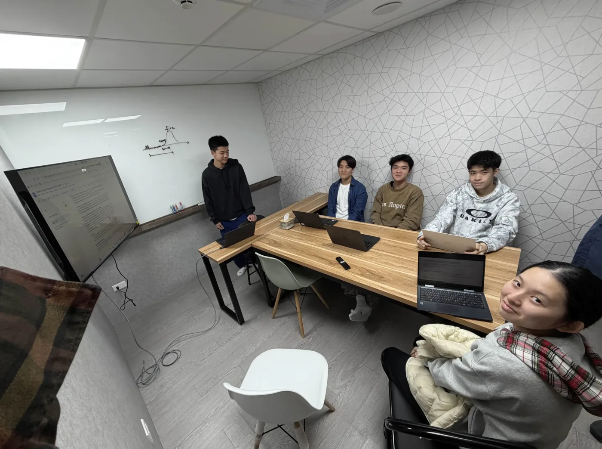
Proposal review, day fifteen. The room is small on purpose. A proposal that cannot survive four people at one table will not survive a judging session. -
1–5 February 2026
A pitch, and the plan we spent the year departing from
The first Human Practices meeting put the pitch in front of somebody who had no stake in liking it. Four days later the team drew the roadmap below: four parallel tracks — biosecurity, modelling, a stress-response switch, and a protectant — each ending in a field test. Read it now and the interesting part is not what it got right. It is that the entire hardware programme, which ended up being half the project, appears on it as the words Collaborate with Drylab in a blue box.
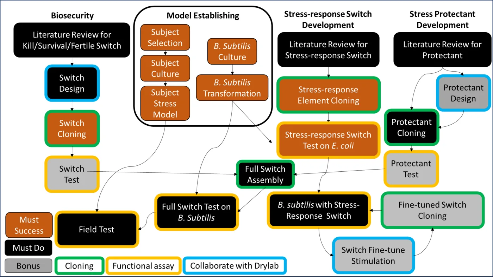
The February roadmap. Four tracks, one field test, and a legend that sorts every task into must do, must succeed and bonus. Roughly half of it happened. The half that did not is documented in Engineering.
Spring: first builds
March to May is when the project stopped being a document. Three things happened in parallel and only one of them was planned: the wet lab learned to work, the project changed shape entirely, and the dry lab started building instruments because the ones we needed cost more than the team had.
-
7–27 March 2026
Training, then an organism
Lab training ran through March: sterile technique, gels, plates, the ordinary competence that has to exist before anything interesting can be attempted. It ended on 27 March at Professor Cheng's molecular biochemistry lab at National Taiwan University, where the team learned the plant protocols it had been reading about and left with Arabidopsis seed in a tube. A week later the Verslues lab at Academia Sinica showed us vertical agar plates and how plant stress is actually scored, which is a harder question than it sounds and one we were about to get wrong.
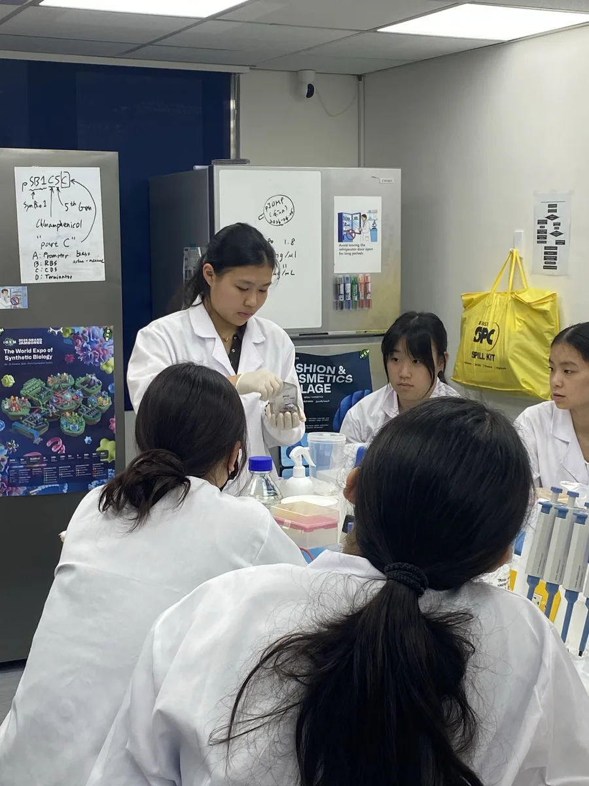
Technique, handed down. Most of what the wet lab knows arrived this way rather than from a protocol sheet. 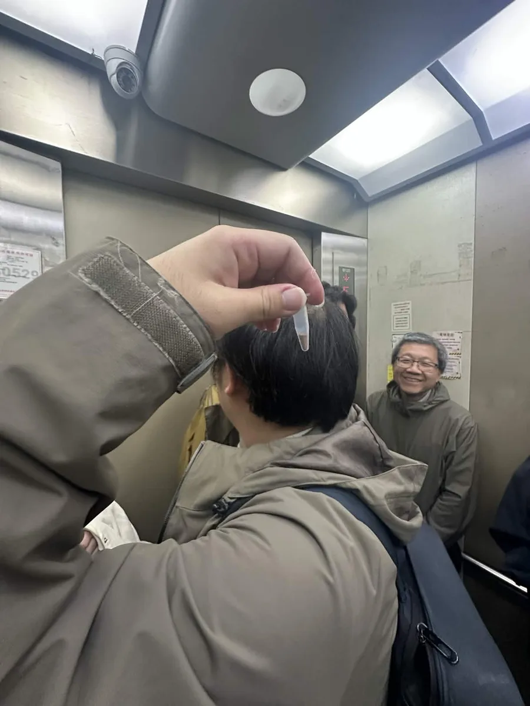
27 March, in the lift on the way out. Arabidopsis thaliana seed, in a tube, in a hand. The plant line in Plants starts here. -
10–15 April 2026
The pivot
April is late to change a project. We changed it anyway. A meeting with Professor Chen Wen-liang, and a startup poster from the 2025 season that had been sitting in a folder since, made the same point from two directions: a protectant that is sprayed is a protectant that is mostly wasted, and the interesting problem is not what you spray but when and where you release it. The diagram below is the result, drawn on 15 April. Stress switches a light on; the light activates one of several chambers of engineered B. subtilis; each chamber releases a different protectant through a selective membrane into the soil.
Everything after this point in the year is that diagram being argued with. The Description page states it properly; what matters here is the date. Six weeks of February's roadmap were spent on a project that no longer existed by the time the seed arrived.
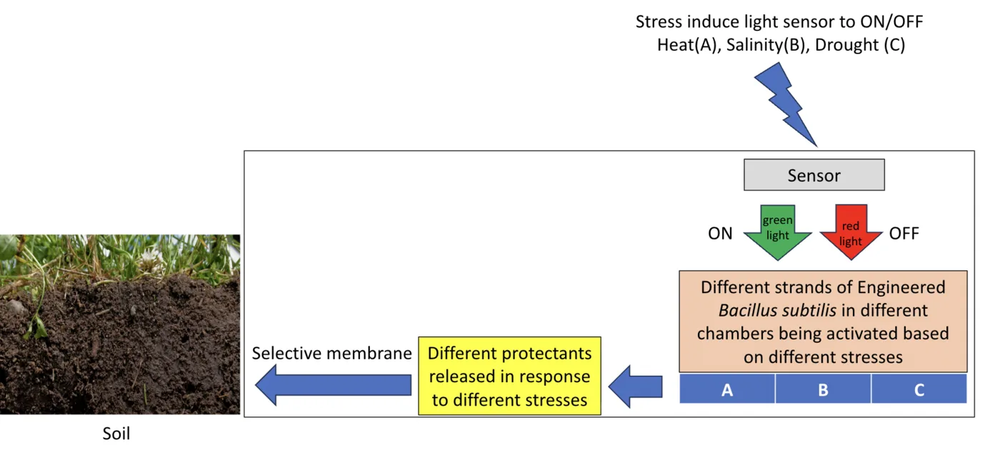
15 April 2026. The whole of ReLeaf, before any of it worked. Three stresses, three chambers, one membrane, and soil on the far side of it. Redrawn many times since; never re-argued. -
16 May 2026
Saying it out loud to a farmer
At the Taipei Expo farmers' market the team put the idea to people who grow things for a living, with a clipboard and no slides. This was the first external check on the pivot, and the answers were not the ones the pitch expected: the farmers we spoke to were less interested in a yield number than in whether a device would demand attention during the weeks they had none to give. That constraint runs through Human Practices and eventually through the hardware.
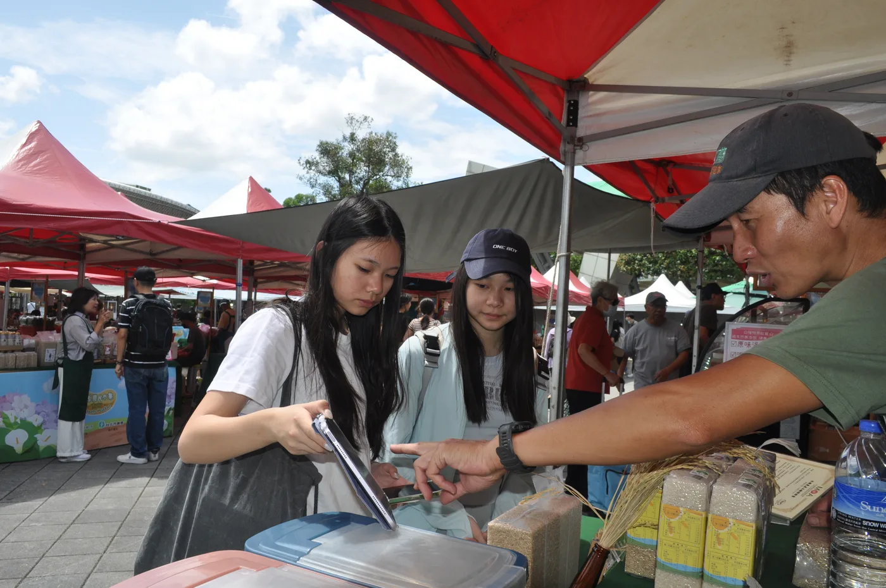
The Expo farmers' market. Two students, one tablet, and a stallholder with a queue. Nine minutes of his time, and the first time anyone outside the team had to react to the idea. -
27–28 May 2026
Two instruments we could not buy
A light plate apparatus for optogenetic induction and an inline photometer for reading culture density are both standard equipment and both out of reach on a school budget. So the dry lab drew them on a whiteboard on 27 May and had a breadboard photometer producing its first readings the following evening, after school, built by two members of the wet lab who had not touched electronics before. Neither instrument was any good yet. Both existed, which was the milestone.
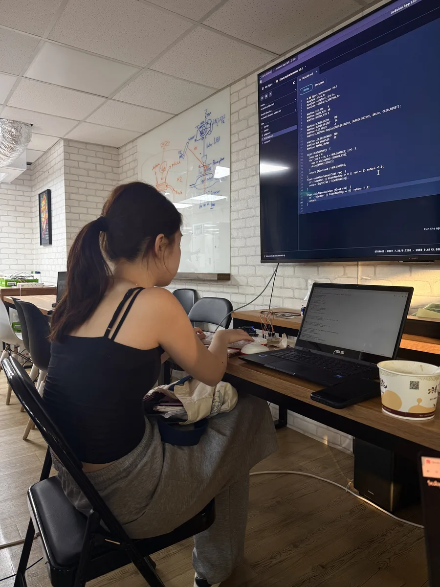
First light, 28 May, after school. Breadboard, laptop, and the sketch on the screen behind. The instrument this became is in Hardware; how far it can be trusted is in Measurement.
Summer: the long runs
June to August is the whole project compressed into eleven weeks. The school year ended, the team moved into the lab full time, and the record thickens accordingly — three hundred and sixty-nine of the year's photographs were taken in this stretch. It is also when most of the failures happened, because it is the first period in which there was enough built to fail.
-
6 June 2026
The reactor holds a culture
The first B. subtilis growth test in the hollow-fibre loop. No induction, no protectant, no measurement worth the name — just medium, cells, a peristaltic pump and the question of whether the thing leaked. It did not. Sampling from the loop and from a flask in parallel started the following week, which is where the growth curves in Results begin.
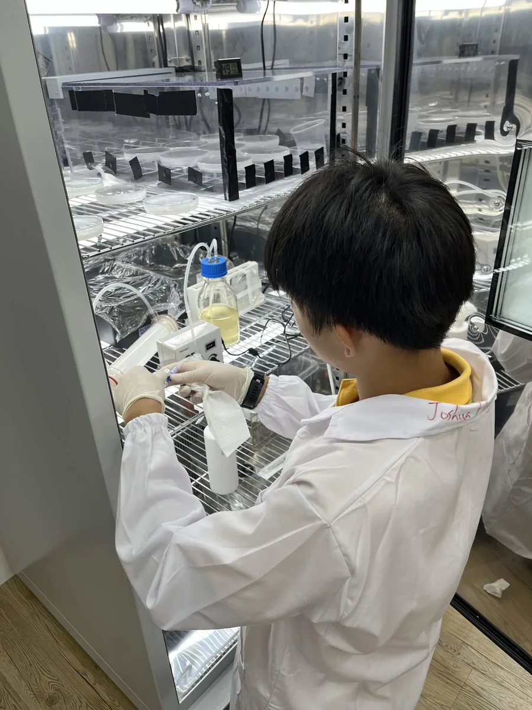
First growth test. Yellow culture in a serum bottle, plants two shelves up, one incubator holding both. The full system in Hardware is this with eight more things attached. -
17 June 2026
The plates go on the rack the wrong way round
Vertical agar plates work because gravity is a signal: roots grow down the plate and can be measured along its face. Racked the wrong way, the seedlings grow across the plate instead, and a fortnight of root-length data becomes a photograph of a mistake. This is that photograph. It is on this page rather than buried in the notebook because it changed the protocol — plate orientation is now checked and initialled by a second person, and no run has repeated it.
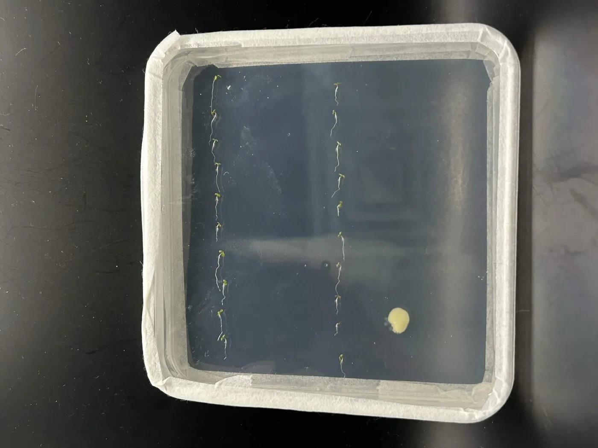
A fortnight, sideways. The seedlings did exactly what they were asked to. The yellow spot on the right is a second lesson from the same plate. -
18–20 June 2026
Prototype 1 meets two professors
Within three days the bioreactor design was reviewed twice by people with no reason to be kind about it. Prototype 1 — a PES hollow-fibre membrane, a 300 mL medium reservoir, a peristaltic pump and a sampling valve — went up on the screen and came back down with a list. The design-build-test cycle recorded in Engineering as cycle 2 starts the day after this meeting.
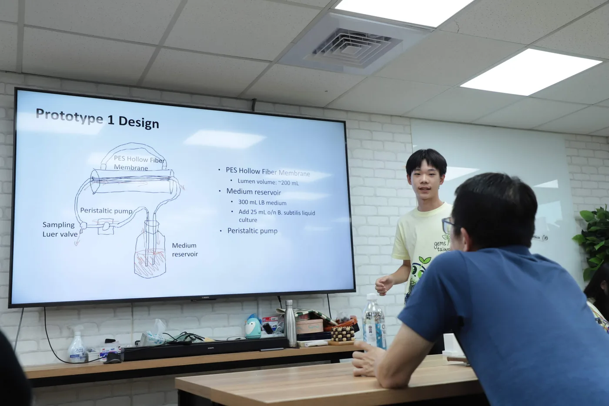
Prototype 1, defended. Lumen volume, medium volume, pump, valve. Presenting a design to somebody who has built one is the cheapest test available and we did not use it often enough. -
24–29 June 2026
The lesson meets its first classrooms
The education programme ran its preliminary trial on 24 June and its first full trial the day after. Both used the leaf-disk experiment: spinach disks sink, then rise under a lamp as they photosynthesise, and stop rising in warm water. That is the ReLeaf premise in a beaker, and it worked. What did not work was the vocabulary — students told us the English terminology was the obstacle, not the biology, and the lesson was rebuilt around that before the next trial. Education carries all four rewrites and the survey data behind them.
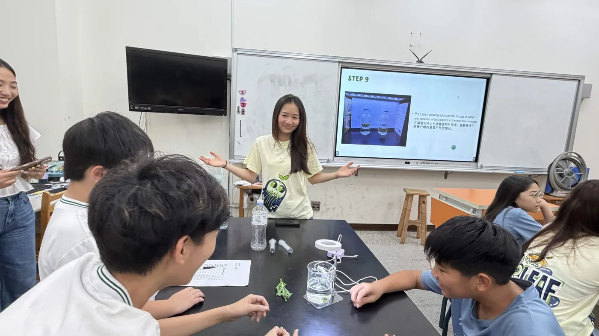
Step nine. Room-temperature water against warm water, one lamp, and a class deciding for itself which beaker is doing more. The comparison is the whole lesson. -
2 July 2026
The team learns git
One afternoon, one whiteboard, four numbered items: show the main workflow, forking problems, marking the mistakes, and a starting task. Before this, the wiki was one person's folder. After it, it was a repository a dozen people could write into without destroying each other's work. Every page on this site, including this one, is downstream of that hour — the handover notes are in Contribution.
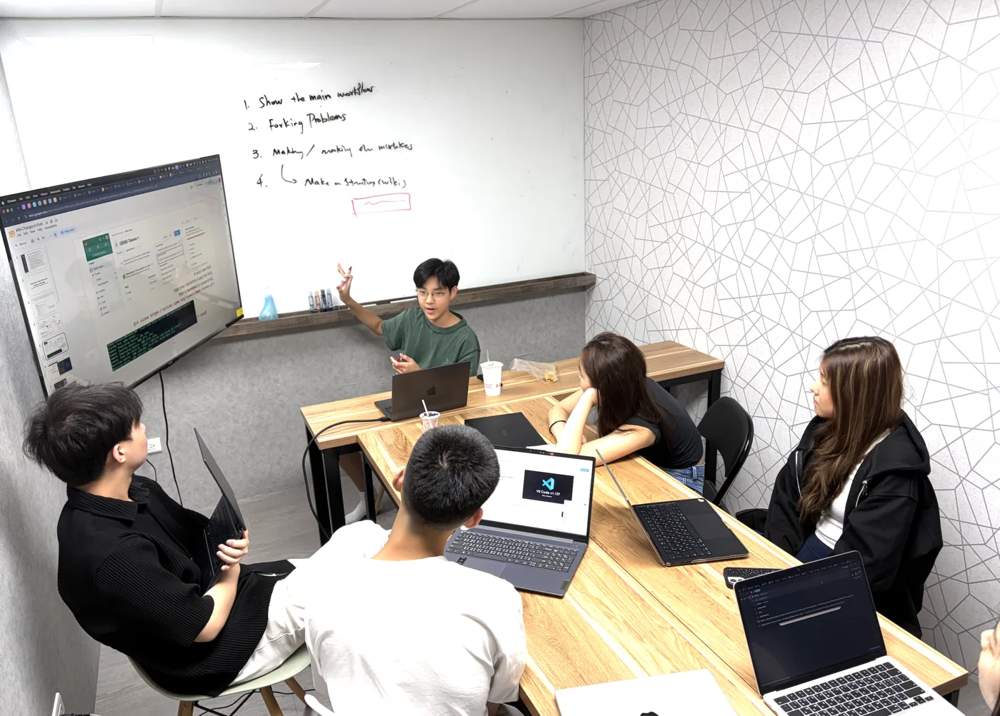
Four items on a whiteboard. The least glamorous milestone of the year and close to the most load-bearing. -
7–9 July 2026
Two outside institutions, two days apart
On 7 July the GIS group put the project to the creative director of the Berkeley Historical GIS Project, which turned a hunch about Taiwanese smallholdings into the mapping programme now on Geospatial Analysis. On 9 July the team spent a day at CH Biotech (正瀚) — a wall of the company's own research posters, a regulatory briefing, and a bottle of their commercial plant protectant to take back to the lab. That bottle is why the efficacy work in Results has a benchmark instead of a baseline of zero.
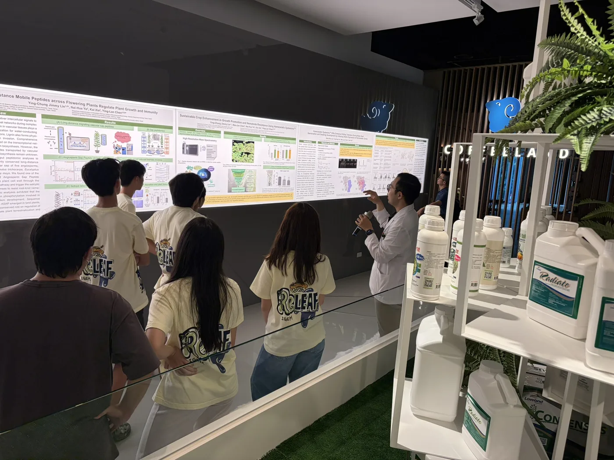
CH Biotech, 9 July. The posters on that wall are the peer-reviewed case for the products on the shelf. Standing between the two is a fair summary of what a protectant has to clear. -
12–19 July 2026
Eight days in which the hardware became instruments
On 12 July a pressure sensor on the reactor reached an Arduino and the laptop drew a live trace — the first time the rig reported on itself rather than being read by hand. On 17 July the 3D-printed parts arrived and the light plate apparatus was assembled whole for the first time, its wells lit amber and green. On 19 July the inline photometer read a growing culture in real time, and then read it about four times too high against the bench Biodrop.
That last one is a milestone in both directions. The instrument worked; the numbers were wrong; the calibration problem it opened is still the largest caveat on Measurement, and 23 August was spent on it.
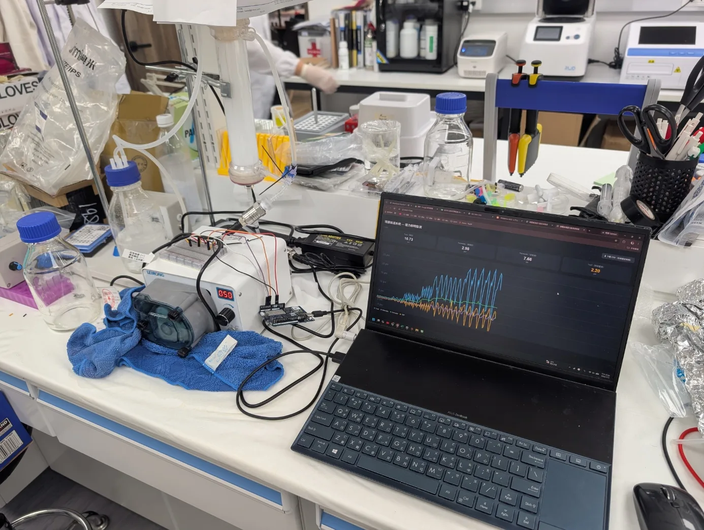
12 July. First live pressure trace off the reactor. 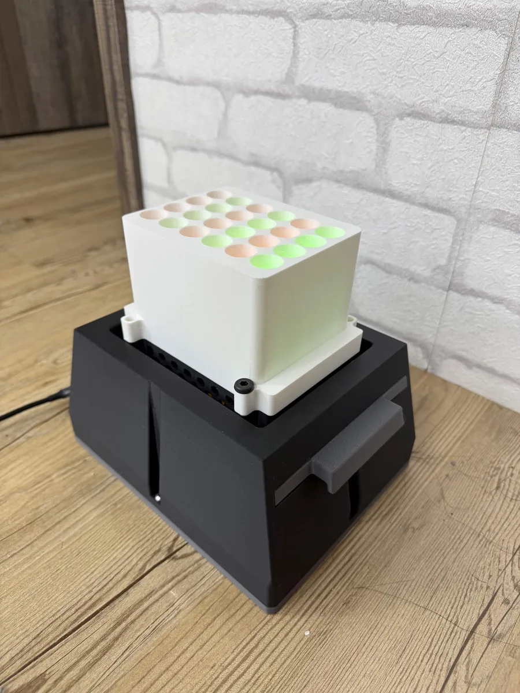
17 July. The light plate, lit, whole, on a floor. 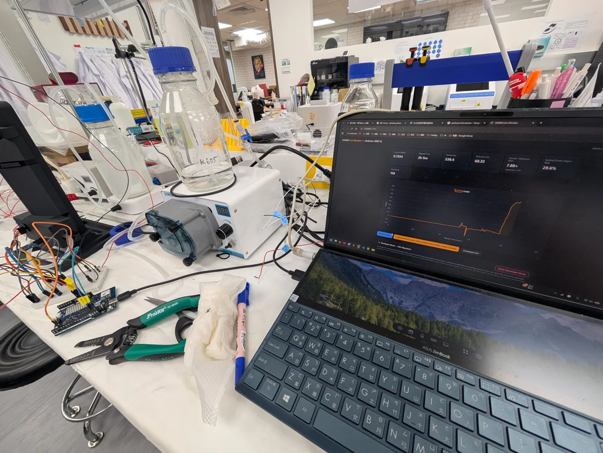
19 July. Live culture, read inline, four-fold high. -
21 July 2026
A day on Farmer Chen's smallholding
Not an interview. A day of work — cutting leaves, harvesting okra, kneeling in her soil while she explained what her plot does in August, and then being fed. The maps on Geospatial Analysis say that Taiwanese agriculture is thousands of small plots rather than a few large ones; this was the day that stopped being a statistic. A device for her farm cannot need mains power, a technician, or a spare hour a day, and the entrepreneurship case in Entrepreneurship is written to those limits because of this visit.
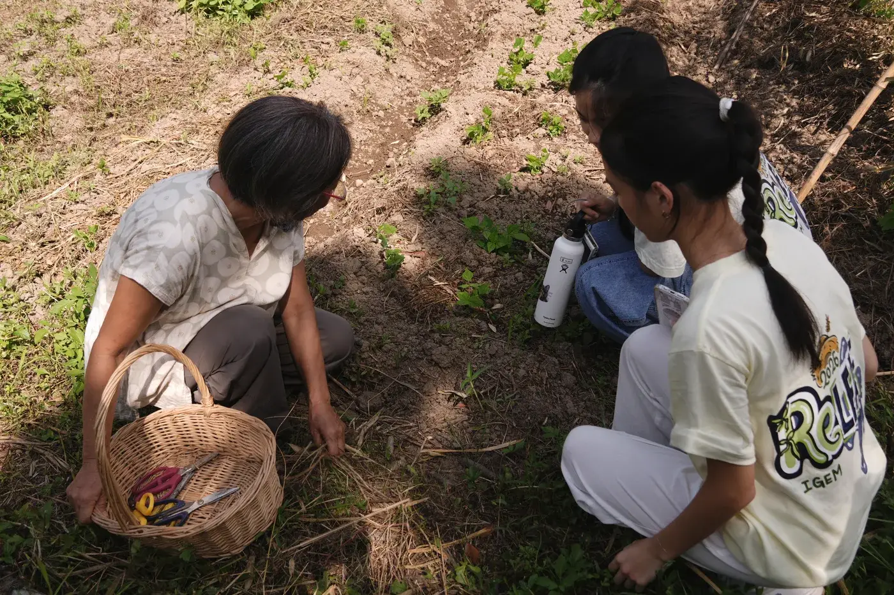
Farmer Chen, 21 July. Her basket, her shears, her soil, and the two people the device would have to be simple enough for. Most of what changed after this visit is in the constraints rather than the design. -
23 July 2026
The hydroponic line is abandoned
The hydroponic setup had been running since May and the plants in it kept dying in ways the team could not attribute. On 23 July it was taken apart and the failures were examined one seedling at a time rather than in aggregate, which is the only way we found the pattern. The decision was to stop: soil, from here on, for every experiment that matters. It cost a whole line of work and it is the reason the plant protocols in Plants are soil-based despite hydroponics being easier to instrument.
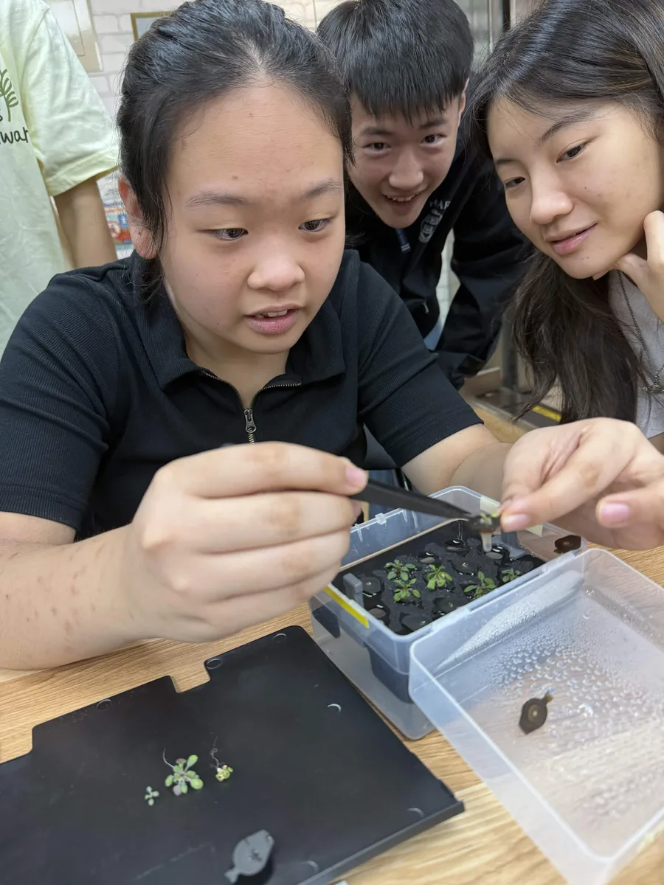
One seedling at a time. Aggregated, the hydroponic failures looked like noise. Individually they did not. -
3–6 August 2026
One cabinet, one system — and a chassis
On 3 August the reactor, the inline photometer, the control electronics and the plants were running in the same incubator at the same time, and the growth curve on the screen was being produced by instruments the team had built. Three days later a visit to National Chung Hsing University ended with a plate of B. subtilis WB800 — a protease-deficient strain, which is the difference between a secreted protectant that survives in the medium and one that is digested by the organism producing it. The strain work is on Parts.
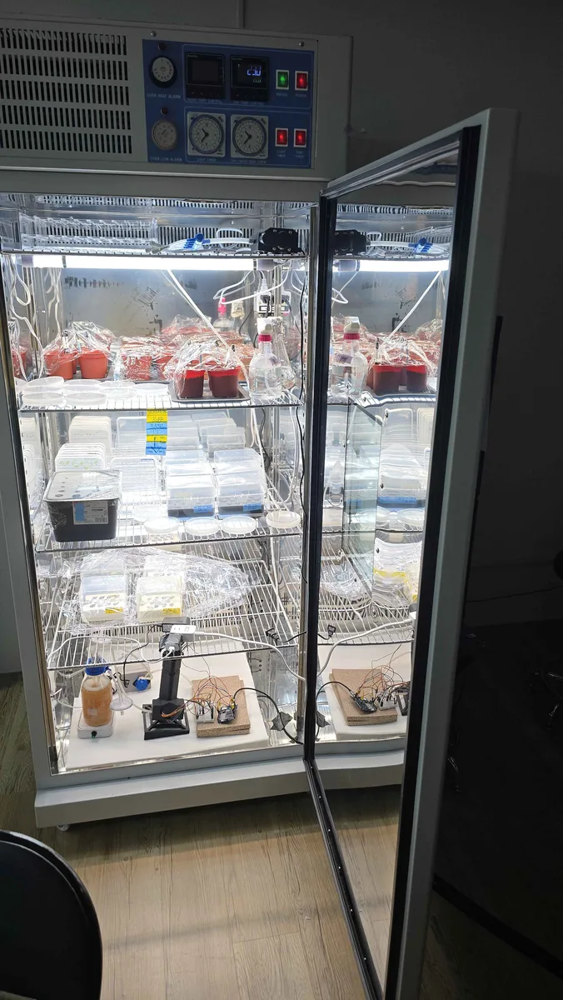
3 August, one cabinet. Plants on the upper shelves, the reactor and photometer on the floor of it, and a single temperature for all of them. The first day the project was one system rather than three. -
11–14 August 2026
What the alternative costs, and the third classroom
A commercial vertical farm on 11 August answered a question the project has to answer honestly: controlled-environment agriculture already solves crop stress, at a capital cost no smallholder will ever meet. Standing under six storeys of LED-lit lettuce is the clearest possible statement of the gap ReLeaf is aimed at, and the comparison is drawn out on Sustainability. Three days later the education programme ran its high school session — the third age band, the third rewrite, and the first audience old enough to argue back about regulation.
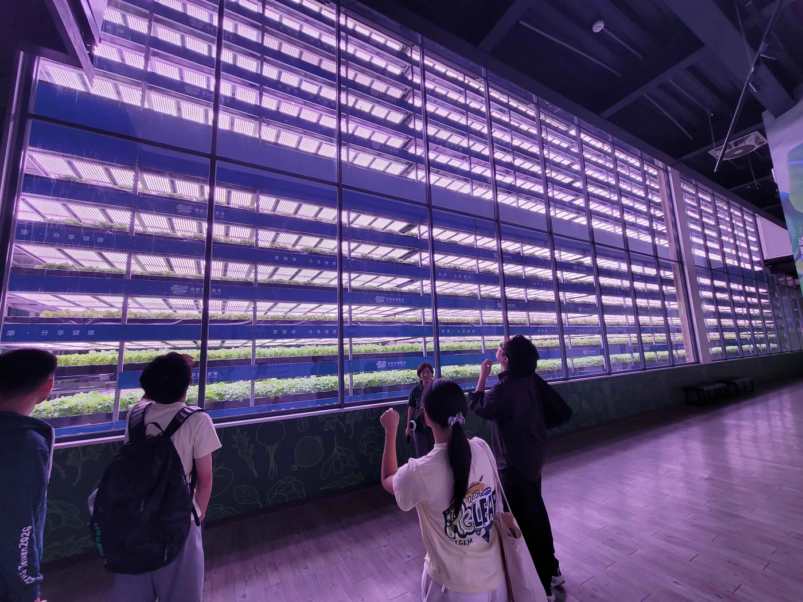
The alternative, at scale. It works. It costs more than the farms we are designing for will ever have. 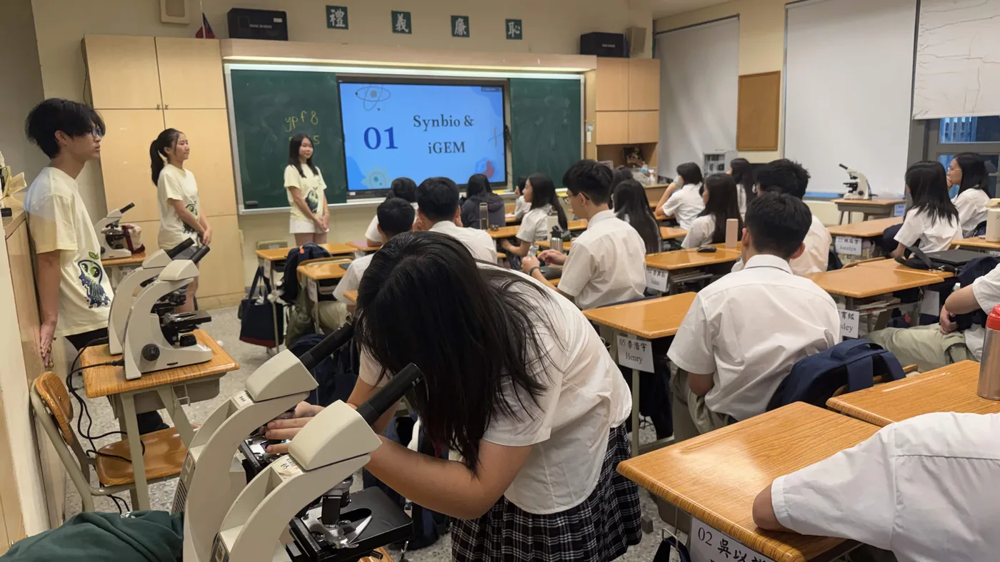
Microscopes out before the slides start. The high school session puts the mechanism first and the argument about it last, which is the order the whole programme was rebuilt into. -
22–23 August 2026
Safety on the record, and the reactor moves house
On 22 August the lab's safety provision was photographed item by item — biosafety cabinet, eye wash, fire blanket, spill kit, first aid, signage — because a safety form that asserts things is worth less than one that shows them. It is filed on Safety. On 23 August the bioreactor was rebuilt into a computer case: a rigid, ventilated, closable enclosure that can be carried, which is the first time the hardware was designed for somewhere other than the bench it was born on. The same day was spent recalibrating the photometer against the Biodrop with a TiO₂ standard, chasing the four-fold error from 19 July.
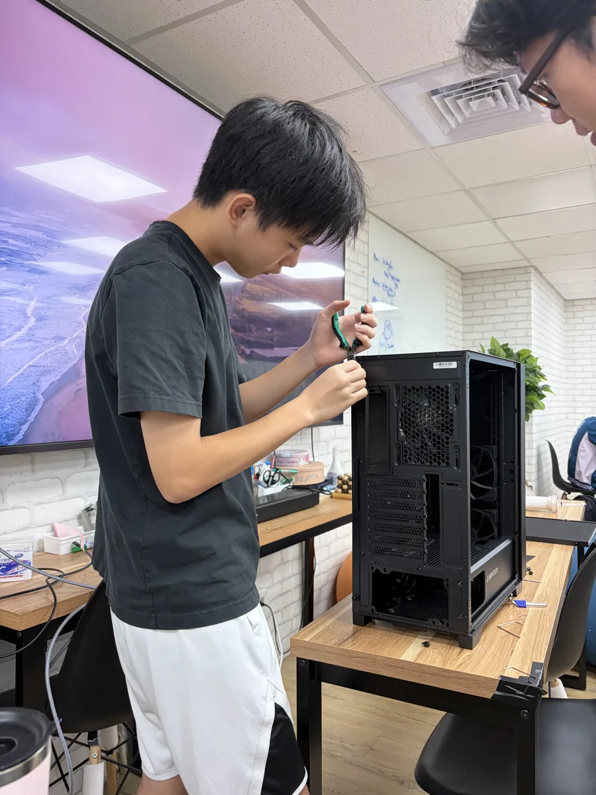
23 August. A computer case is cheap, rigid, ventilated, and already designed to hold hot electronics next to moving air. The full enclosure argument is in Hardware. -
29 August 2026
Saying it out loud, again
Booth material and presentation rehearsals began on 29 August, nine weeks out. The first rehearsals were in Chinese, in front of the team's own poster, to an audience of one. Explaining the project to somebody standing in front of you finds the holes in it faster than rereading the wiki does, which is the same lesson as 27 December 2025 and 20 June 2026, learned for the third time.
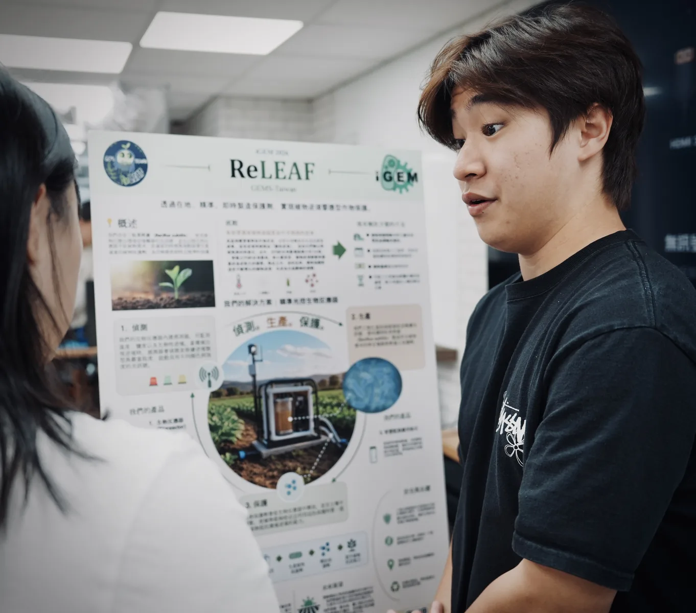
Rehearsal, 29 August. 偵測、生產、保護 — sense, produce, protect. Nine weeks to make that survive a question from someone who does this for a living.
Autumn: the argument
This page is being written on 30 August 2026, so what follows is a plan rather than a record. The hollow dots are the honest part: these are dated commitments, not achievements, and each one will be rewritten in the past tense or explained away when it arrives.
-
September 2026
Characterisation, and the calibration that is still open
The switch and protectant lines have to produce data that survives being plotted next to the CH Biotech benchmark, and the photometer has to agree with a reference instrument before any of that data means anything. Whatever the calibration ends up being, it will be stated on Measurement with the residual error attached rather than smoothed out.
-
October 2026
The wiki freeze
Every page written, every image and the typeface re-hosted on
static.igem.wiki, every scaffold note deleted, and the parts submitted to the registry. The publishing checklist this team is working from is in the repository asnotes/publishing.md. -
1–7 November 2026
Grand Jamboree, Biomanufacturing Village
Where the argument gets made to people whose job is to find the hole in it. The photograph folder already has a week reserved for it.
How this page was assembled
Nothing on this timeline was reconstructed from memory. Since December
2025 the team has filed every photograph under the month, sub-team and
week it was taken in, named
YYYYMMDD_Subteam_Type_Description, with the date being the
day of the shot rather than the day of the upload. That gives 489
images across 38 weeks, and it is the primary source for every
entry above — the date on a milestone is the date on a file.
Two consequences worth stating. First, the record is uneven in a way
that reflects the year rather than the project's importance: December
has three photographs and June has one hundred and thirty-seven,
because in December there was nothing to photograph. Second, several
entries here are failures, and they are here because the filing system
made them impossible to quietly lose. A photograph named
...GetsPutOnTheRackWrongDirection... is not a photograph
anybody deletes.
References
- ReLeaf photograph archive, GEMS Taiwan, December 2025 – August 2026. 489 dated images, filed by month, sub-team and week; naming convention and week table in
_README_命名規則.md, per-file index in_PHOTO_MANIFEST.csv. - ReLeaf project roadmap, 5 February 2026. Four-track plan: biosecurity, model establishment, stress-response switch, stress protectant.
- ReLeaf system schematic, 15 April 2026. Stress-induced light switching across three protectant chambers with release through a selective membrane.